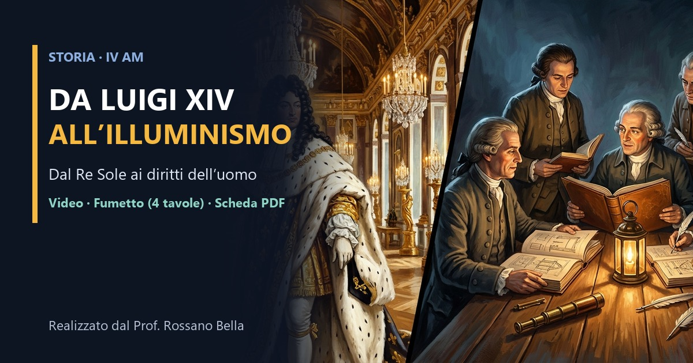

Fumetto · 4 tavole · Storia IV AM
Da Luigi XIV all’Illuminismo a fumetti
Otto vignette grandi in quattro tavole: potere assoluto, Tre Ordini, Ragione, separazione dei poteri e Toscana 1786.
Scorri o tocca i lati della tavola. Pizzica o doppio tap per ingrandire. «Schermo intero» sul telefono.